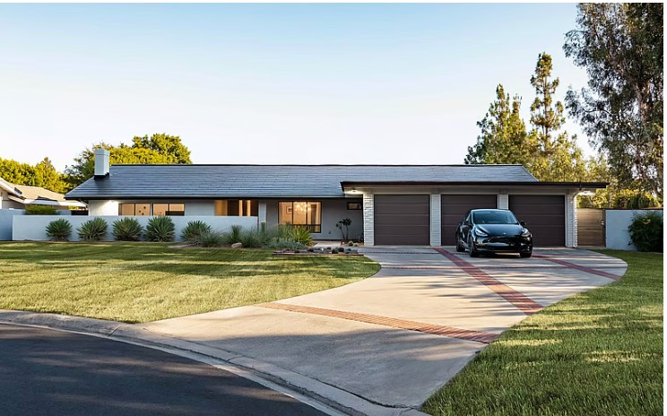
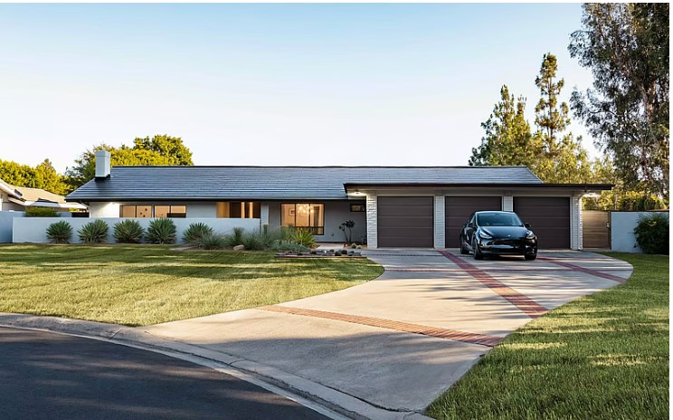

Información
Green Tech es un concepto que se usa para hacer referencia a todos aquellos avances tecnológicos que se llevan a cabo de manera sostenible. En otras palabras, que se lleve a cabo sin perjudicar ni el medio ambiente ni a los seres humanos. Algo que diferencia las empresas greentech del resto, es que trabajan en avances diseñados para contaminar en la mínima medida posible y no perjudicar el medio ambiente desde el inicio del proceso de creación de la tecnología.
Se trata de una iniciativa de ADVANTAGE AUSTRIA que persigue el objetivo de dar a conocer internacionalmente las innovaciones austríacas en el ámbito de la GreenTech.
La tecnología verde es importante para generarate processEs para minimizar las emisiones que producen otras tecnologías. También mostrará a la raza humana formas de descubrir nuevas tecnologías que no impact el ambiente drásticoally, como plantas eléctricas alimentadas con carbón, automóviles impulsados por combustibles fósiles, centros de datos que consumen mucha energía, etc.
El principal objetivo de la tecnología verde es ayudar a otras tecnologías a lograr sostenibilidad sin dañar el medio ambiente circundante a largo plazo. Otros objetivos importantes de la tecnología verde son los siguientes:
- Crear un equilibrio con fuentes de energía
- Ahorrar fuentes de energía renovable
- Salvar a la naturaleza de la sobreexplotación
- Crear energía limpia
- Eficiencia energética
- Impulsar energía renovable
- Reducir costos comerciales
- Promover la conservación de recursos
- Investiagción de tecnología sostenible
- Reemplazar procesos que dañan al medio ambiente
 
